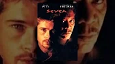
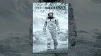
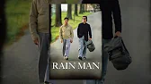

Set more than a decade after the events of the first film, “Avatar: The Way of Water” begins to tell the story of the Sully family (Jake, Neytiri, and their kids), the trouble that follows them, the lengths they go to keep each other safe, the battles they fight to stay alive, and the tragedies they endure.
Directed by James Cameron and produced by Cameron and Jon Landau, the Lightstorm Entertainment Production stars Sam Worthington, Zoe Saldaña, Sigourney Weaver, Stephen Lang and Kate Winslet. Screenplay by James Cameron & Rick Jaffa & Amanda Silver. Story by James Cameron & Rick Jaffa & Amanda Silver & Josh Friedman & Shane Salerno. David Valdes and Richard Baneham serve as the film’s executive producers.
Владелец Контента
Fox
Дата Выхода
2022
Длительность
2:29

Seven Фільми YouTube Кримінал • 1995 Купити або взяти напрокат

interstellar Фільми YouTube Драми • 2014 Купити або взяти напрокат

Rain Man Фільми YouTube Драми • 1988 Купити або взяти напрокат
Dune Фільми YouTube Научна Фантастика • 2021 Купити або взяти напрокат